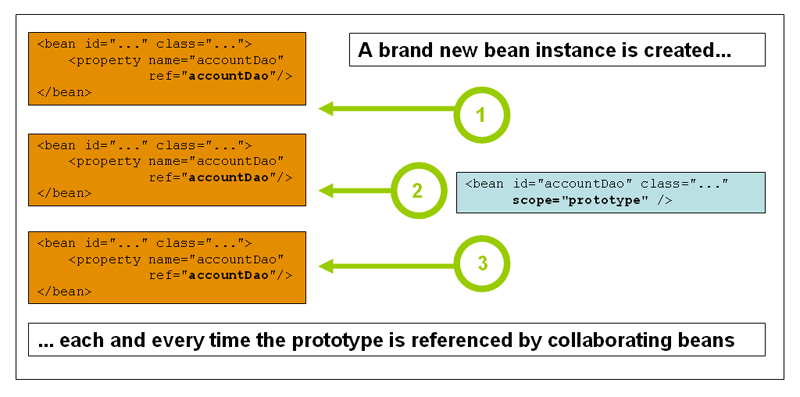

Spring IoC 容器是Java世界对于IoC实现的事实上的工业标准。基本上大型 Java应用都绕不过它。以至于滴滴在转型golang的时候搞了一个go-spring出来。本文介绍了Spring IoC 容器的基本使用。
基本概念
org.springframework.beans和org.springframework.context两个包是Spring框架IoC容器的基础。它们分别提供了BeanFactory和ApplicationContext。顾名思义BeanFactory是一个bean的工厂，它提供了一种配置的机制，可以管理任何对象。而ApplicationContext是它的子接口，对他实现了一些增强，如：
- 更容易与Spring的AOP特性集成
- 消息资源处理，可以用于国际化
- 容器事件的发布
- 特定于应用程序层的上下文，如用于web应用程序的WebApplicationContext。
简而言之，BeanFactory提供了配置框架和基本功能，ApplicationContext添加了更多增强功能。ApplicationContext是BeanFactory的完整超集。
Spring IoC容器管理的对象称为bean。bean是由Spring IoC容器实例化、组装和管理的对象。否则，bean只是应用程序中许多对象中的一个。bean以及它们之间的依赖关系反映在容器使用的配置元数据中。
容器使用
// beans.xml
<?xml version="1.0" encoding="UTF-8"?>
<beans xmlns="http://www.springframework.org/schema/beans"
xmlns:xsi="http://www.w3.org/2001/XMLSchema-instance"
xsi:schemaLocation="http://www.springframework.org/schema/beans
https://www.springframework.org/schema/beans/spring-beans.xsd">
<bean id="hhdDevice" class="com.lihongkun.labs.spring.container.devicewriter.HhdWriter"></bean>
<bean id="ssdDevice" class="com.lihongkun.labs.spring.container.devicewriter.SsdWriter"></bean>
<bean id="deviceWriter" class="com.lihongkun.labs.spring.container.devicewriter.DeviceWriter">
<property name="deviceWriter" ref="hhdDevice" />
</bean>
</beans>
先前举过一个例子，如果托管给spring容器则配置如上。每个对象都是一个bean，用bean的标签来声明，id即其唯一标识，class 为其实现类，容器会通过这个类型去初始化一个对象。上述配置文件中的deviceWriter依赖了一个IDeviceWriter接口的实现，使用hhdDevice注入其中，DeviceWriter的实现中并不知道其存在。
使用BeanFactory来实例化一个IoC容器
package com.lihongkun.labs.spring.container;
import com.lihongkun.labs.spring.container.devicewriter.DeviceWriter;
import org.springframework.beans.factory.support.DefaultListableBeanFactory;
import org.springframework.beans.factory.xml.XmlBeanDefinitionReader;
import org.springframework.core.io.ClassPathResource;
public class BeanFactoryLab {
public static void main(String[] args) {
DefaultListableBeanFactory beanFactory = new DefaultListableBeanFactory();
XmlBeanDefinitionReader reader = new XmlBeanDefinitionReader(beanFactory);
reader.loadBeanDefinitions(new ClassPathResource("beans.xml"));
DeviceWriter deviceWriter = beanFactory.getBean("deviceWriter", DeviceWriter.class);
deviceWriter.saveToDevice();
}
}
使用ApplicationContext来实例化一个IoC容器
package com.lihongkun.labs.spring.container;
import com.lihongkun.labs.spring.container.devicewriter.DeviceWriter;
import org.springframework.context.ApplicationContext;
import org.springframework.context.support.ClassPathXmlApplicationContext;
public class ApplicationContextLab {
public static void main(String[] args) {
ApplicationContext applicationContext = new ClassPathXmlApplicationContext("beans.xml");
DeviceWriter deviceWriter = applicationContext.getBean("deviceWriter", DeviceWriter.class);
deviceWriter.saveToDevice();
}
}
实现同样的功能，使用方式类似，bean定义文件可以互通。
配置引用
简单的场景使用一个bean配置文件可以解决问题，如果项目比较复杂，可以按bean的领域进行分类来划分配置文件。这时候就需要使用到import的功能。
<beans>
<import resource="services.xml"/>
<import resource="resources/messageSource.xml"/>
<import resource="/resources/themeSource.xml"/>
<bean id="bean1" class="..."/>
<bean id="bean2" class="..."/>
</beans>
命名和别名
bean除了id 还可以使用name为其命名，name必须是容器中唯一。不仅如此，还能为其使用别名，即alias标签的使用。
<alias name="fromName" alias="toName"/>
这么做只是为了拥有更好的语义性。假设有两个子系统，它们都各自声明了数据源，其实是同一个。在一个应用中集成了两个子系统。则不需要初始化两个数据源。但是又改变其中的配置实现。那么只需要初始化myApp-dataSource，将其设置别名，两个不同的子系统就分别能够引用到了。
<alias name="myApp-dataSource" alias="subsystemA-dataSource"/>
<alias name="myApp-dataSource" alias="subsystemB-dataSource"/>
一致地命名bean使配置更易于阅读和理解。另外，如果使用Spring AOP，按名称相关的bean进行配置，语义性的作用就更加明显了。
Bean实例化方式
Spring容器的初始化bean可以通过几种方式：
构造函数
<bean id="exampleBean" class="examples.ExampleBean"/>
实际使用的是反射，容器在进行实例化的时候直接使用反射调用了ExampleBean的构造函数
静态工厂方法
// application.xml
<bean id="clientService"
class="examples.ClientService"
factory-method="createInstance"/>
// static factory method
public class ClientService {
private static ClientService clientService = new ClientService();
private ClientService() {}
public static ClientService createInstance() {
return clientService;
}
}
class的指定没有区别，只是使用factory-method来告诉容器实例化的时候调用此方法就能实例化，而不同通过反射的方式去创建类对象。
实例工厂方法
// application.xml
<bean id="serviceLocator" class="examples.DefaultServiceLocator">
<!-- inject any dependencies required by this locator bean -->
</bean>
<bean id="clientService"
factory-bean="serviceLocator"
factory-method="createClientServiceInstance"/>
<bean id="accountService"
factory-bean="serviceLocator"
factory-method="createAccountServiceInstance"/>
// instance
public class DefaultServiceLocator {
private static ClientService clientService = new ClientServiceImpl();
private static AccountService accountService = new AccountServiceImpl();
public ClientService createClientServiceInstance() {
return clientService;
}
public AccountService createAccountServiceInstance() {
return accountService;
}
}
实例工厂的方式需要先实例化工厂类，然后使用factory-bean来引用。进而使用factory-method来指定使用factory-bean的哪个方法来实例化bean。
依赖注入
Spring容器的依赖注入方式分为以下几种
构造函数
<beans>
<bean id="beanOne" class="x.y.ThingOne">
<constructor-arg index="0" ref="beanTwo"/>
<constructor-arg index="1" ref="beanThree"/>
</bean>
<bean id="beanTwo" class="x.y.ThingTwo"/>
<bean id="beanThree" class="x.y.ThingThree"/>
</beans>
beanOne使用constructor-arg指定了构造函数的参数进行依赖bean的注入。
如果是一些原始类型常量可以使用type指定类型进行注入，因为有时候类型推断是一件不靠谱的事情。
<bean id="exampleBean" class="examples.ExampleBean">
<constructor-arg type="int" value="7500000"/>
<constructor-arg type="java.lang.String" value="42"/>
</bean>
Setter函数
<beans>
<bean id="hhdDevice" class="com.lihongkun.labs.spring.container.devicewriter.HhdWriter"></bean>
<bean id="deviceWriter" class="com.lihongkun.labs.spring.container.devicewriter.DeviceWriter">
<property name="deviceWriter" ref="hhdDevice" />
</bean>
</beans>
如果class的实现里面有setXXX的属性 则可以使用 property 标签进行属性的注入。
如何选择
基于构造函数和基于Setter函数的依赖注入并不冲突，它们可以混合使用。选择的原则应该倾向于，如果是强依赖则使用构造函数注入，如果是可选的依赖则使用Setter函数注入。
Setter注入应该主要用于可选的依赖项，这些依赖项可以在类中分配合理的默认值。否则，非空检查必须在代码使用依赖项的任何地方执行。setter注入的一个好处是setter方法使该类的对象能够在以后重新配置或重新注入。因此，通过JMX MBeans进行管理是setter注入的一个引人注目的用例。
这个关注点其实做国内业界已经被滥用了，基本上大部分的注入都是基于Setter。
循环依赖
如果主要使用构造函数注入，则有可能创建一个无法解决的循环依赖场景。
public class CircularBeanA {
private CircularBeanB circularBeanB;
public CircularBeanA(CircularBeanB circularBeanB){
this.circularBeanB = circularBeanB;
}
}
public class CircularBeanB {
private CircularBeanA circularBeanA;
public CircularBeanB(CircularBeanA circularBeanA){
this.circularBeanA = circularBeanA;
}
}
如上述两个类，使用基于构造函数的依赖注入，配置如下
<?xml version="1.0" encoding="UTF-8"?>
<beans xmlns="http://www.springframework.org/schema/beans"
xmlns:xsi="http://www.w3.org/2001/XMLSchema-instance"
xsi:schemaLocation="http://www.springframework.org/schema/beans
https://www.springframework.org/schema/beans/spring-beans.xsd">
<bean id="circularBeanA" class="com.lihongkun.labs.spring.container.circular.CircularBeanA">
<constructor-arg ref="circularBeanB" />
</bean>
<bean id="circularBeanB" class="com.lihongkun.labs.spring.container.circular.CircularBeanB">
<constructor-arg ref="circularBeanA" />
</bean>
</beans>
那么容器初始化的时候将抛出一个BeanCurrentlyInCreationException并且提示是不是循环依赖了。这时候如果使Setter注入则可以解决。
// 需要改造下上述两个类的实现
<?xml version="1.0" encoding="UTF-8"?>
<beans xmlns="http://www.springframework.org/schema/beans"
xmlns:xsi="http://www.w3.org/2001/XMLSchema-instance"
xsi:schemaLocation="http://www.springframework.org/schema/beans
https://www.springframework.org/schema/beans/spring-beans.xsd">
<bean id="circularBeanA" class="com.lihongkun.labs.spring.container.circular.CircularBeanA">
<property name="circularBeanB" ref="circularBeanB" />
</bean>
<bean id="circularBeanB" class="com.lihongkun.labs.spring.container.circular.CircularBeanB">
<property name="circularBeanA" ref="circularBeanA" />
</bean>
</beans>
作用域
Spring Bean的作用域除了常见的Singleton 和 Prototype 还有随着扩展功能而增加的Request, Session, Application, and WebSocket Scopes
Singleton
顾名思义是一个单例模式的bean，也就是在容器中只有一个实例存在。

Prototype
每次需要的时候进行创建

Request, Session, Application, and WebSocket
Request, Session, Application, and WebSocket 作用域只存在于 XmlWebApplicationContext，同是把Web相关的bean创建托管到Spring 容器的时候才存在。最典型的应用就是Spring MVC，其中获取请求或者会话对象的方式。
小结
Spring IoC容器 提供了一套基础配置框架，让使用者把应用程序中类的管理托管到容器中。被托管到容器中实例化的对象我们称为Bean。通常使用ApplicationContext 及其子类来实例化Spring IoC容器。
Bean可以进行命名和使用别名、指定实例化的方式、指定实例化后的作用域、设定依赖注入的方式 和 注入的Bean。